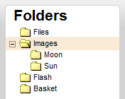
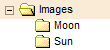
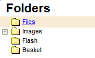
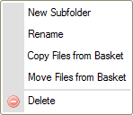
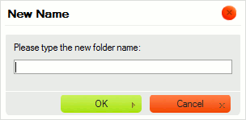
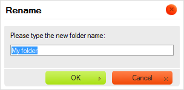
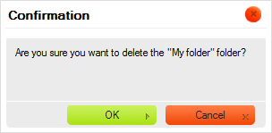
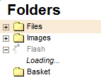

The Folders Pane contains the "tree view" of the folders that you can navigate. Folders are used to organize and categorize your files.

Folders display is called "tree view" because the folders hierarchy is represented like tree branches, with subfolders placed below and indented with regard to their parent items. The Folders Pane uses the same graphic representation that can be found in many modern operating systems.
In order to open a folder and expand its subfolders, click the plus icon
( ) in front of the folder name. If the plus
icon is not present, the folder does not contain any subfolders.
) in front of the folder name. If the plus
icon is not present, the folder does not contain any subfolders.
See the "On Request Loading" section below if you require more information about the loading process in CKFinder.
In order to close a folder and hide (collapse) its subfolders, click the minus icon
( ) in front of the folder name.
) in front of the folder name.

In order to select a folder and make it the "current folder" in CKFinder, click the folder name or its icon. The selected folder will be highlighted with a different background color.

Advanced operations can be performed on a folder by using its Context Menu. Depending on the circumstances, the following options may be available:

Note: Some context menu options may be disabled (and thus grayed out), depending on CKFinder settings enforced by your system administrator.
In order to create a child folder inside an existing folder, choose the New Subfolder option from the context menu of the parent folder. Type the name of the new folder in the dialog window that will be displayed. Once you give the new folder a name and close the dialog window, the folder will be created.

Not all characters can be used in folder and file names due to limitations of the
systems where CKFinder runs. Among the characters that cannot be used in folders and
files names are: \ / :
* ? " <
> and |.
In order to rename a folder, choose the Rename option from its context menu or use the F2 keyboard shortcut. Type the new folder name in the dialog window that will be displayed, overwriting the existing name. Once you enter the new folder name and close the dialog window, the folder will be renamed.

As stated above, not all characters can be used in folder and file names due to limitations of the
systems where CKFinder runs. Among the characters that cannot be used in folders and
files names are: \ / :
* ? " <
> and |.
Attention: When you rename a folder, links or media insertions available on other pages and pointing to files or folders inside the renamed folder will be broken, and thus not available anymore. Because of that be careful when using this feature.
The Basket is a virtual placeholder that can be helpful if you want to perform batch operations on files. The copying and moving operations are described in the "Basket" section of the User's Guide.
In order to delete a folder, including all its contents, choose the Delete option from its context menu or use the Del key. A confirmation message will appear to ensure that this operation is what you really intend to do. Once you confirm the deletion, the folder will be removed.
Attention: This operation cannot be undone. Once you delete the folder and its contents, you will not be able to restore the removed files.

Attention: When you delete a folder, links or media insertions available on other pages and pointing to files or folders inside the deleted folder will be broken, and thus not available anymore. Because of that be careful when using this feature.
The most important difference between CKFinder and the folders tree structures found in desktop operating systems is that in CKFinder the folders are loaded "on request". It means that the application does not load the entire folders tree structure at startup, but instead loads its small subset when the folder is being expanded. This feature is present in most advanced web applications like CKFinder and allows to save on bandwidth and loading time.
To indicate that folders are being loaded, the Loading... label may appear when you expand a folder:

The label will automatically disappear once all requested folders are loaded.